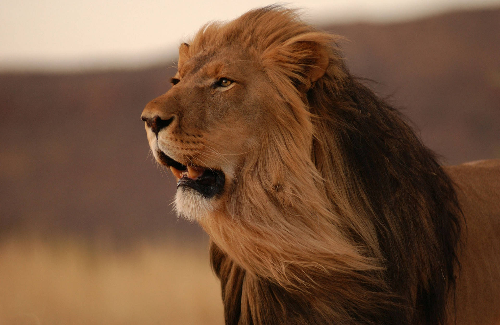
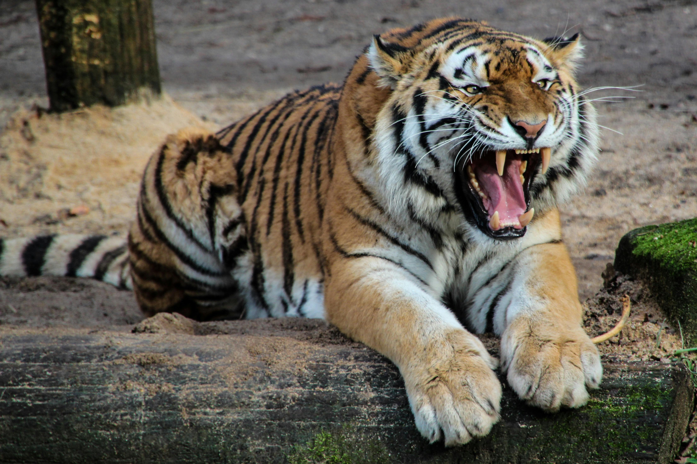
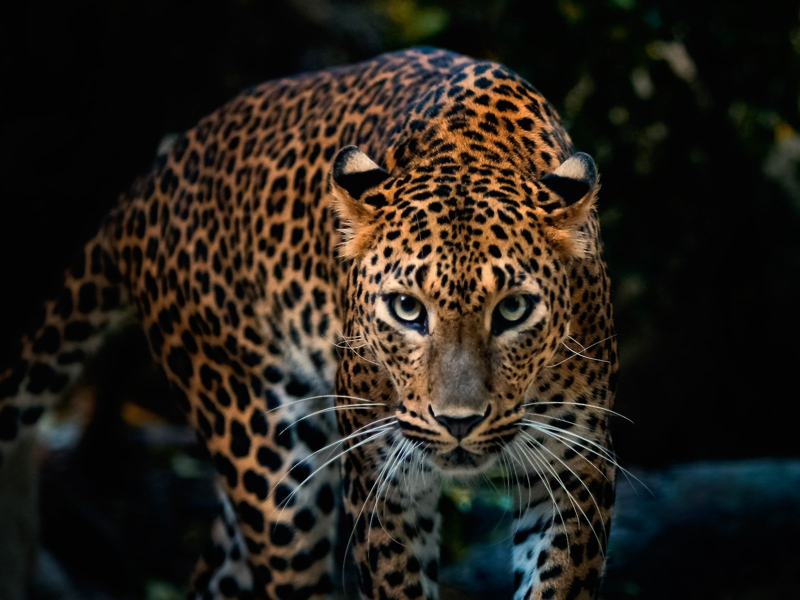
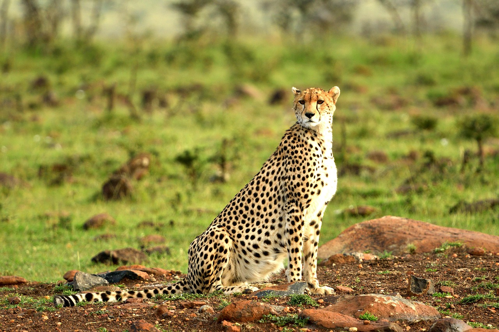
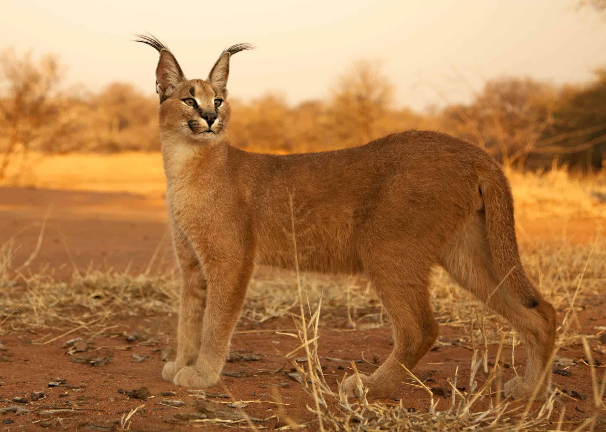
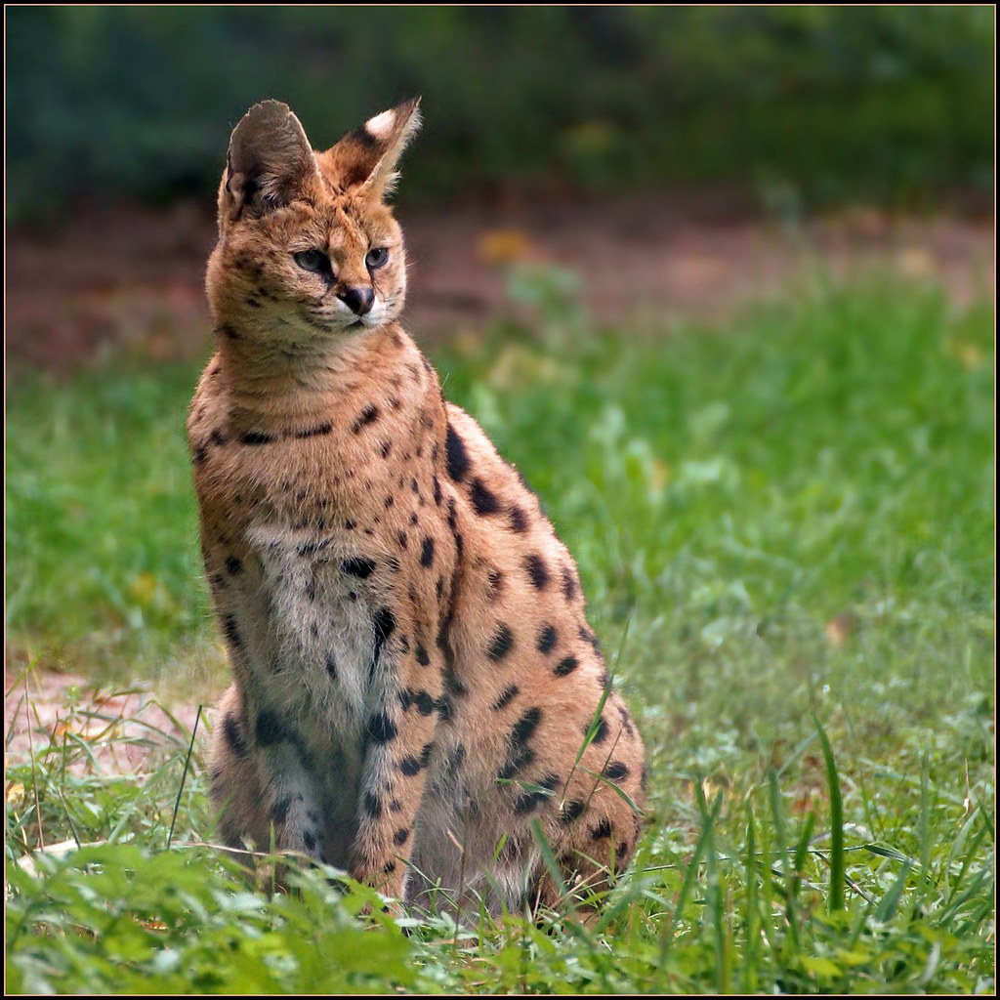
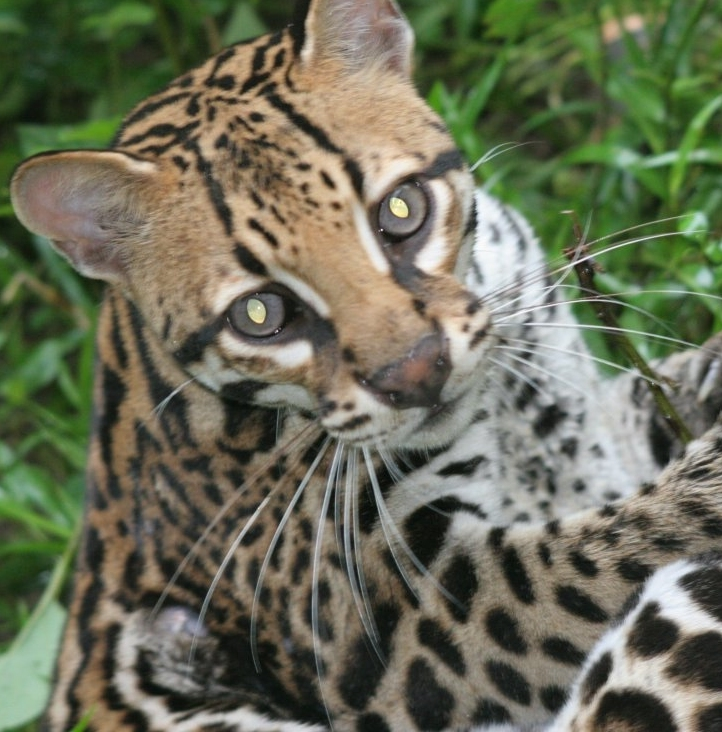

Wild cats are a fascinating bunch, and the deeper you look, the more impressive they get. They range from tiny, forest‑dwelling hunters to the iconic big cats that dominate entire ecosystems.
The Big Names
Lion
Social, living in prides
Found mostly in sub‑Saharan Africa
Known for cooperative hunting and territorial behavior

Tiger
Largest wild cat species
Solitary, powerful swimmers
Distinct subspecies like Bengal, Siberian, and Sumatran

Leopard
Masters of stealth
Can drag prey heavier than themselves up trees
Extremely adaptable—Africa to Asia

Cheetah
Fastest land animal (up to 70 mph)
Built for acceleration, not power
Hunts mostly during the day

Jaguar
Found in the Americas
Strongest bite relative to body size among big cats
Known for crushing skulls and turtle shells
The Underrated Small Wildcats
These often get overlooked, but they’re incredible hunters.
Caracal
Famous for huge, expressive ear tufts
Insane jumping ability—can snatch birds mid‑air

Serval
Long legs and huge ears
Uses pinpoint hearing to catch rodents in tall grass

Ocelot
Beautiful patterned coat
Nocturnal and highly territorial

Sand Cat
Tiny desert specialist
Can survive extreme heat and cold with minimal water
What Makes a Wild Cat a “Wild Cat”
They belong to the family Felidae
They’re obligate carnivores
They’re highly specialized predators
They rely on stealth, speed, or power depending on species
Conservation Snapshot
Many wild cats are threatened due to:
Habitat loss
Poaching
Human–wildlife conflict
Declining prey populations
Some, like the Amur leopard and Sumatran tiger, are critically endangered.